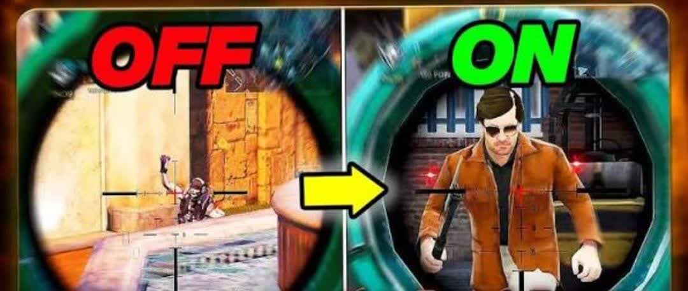

بازی Call of Duty Mobile یکی از محبوب ترین بازی های شوتر موبایلی در جهان است که میلیون ها بازیکن روزانه در آن رقابت میکنند. یکی از قابلیت هایی که در سال های اخیر توجه بسیاری از بازیکنان حرفه ای را جلب کرده دارک اسکوپ (Dark Scope) است. بسیاری از گیمرها معتقدند که فعال کردن دارک اسکوپ می تواند دید بهتری در هنگام نشانه گیری ایجاد کرده و عملکرد بازیکن را در نبردهای رقابتی افزایش دهد. در این راهنمای جامع تمامی مراحل فعالسازی دارک اسکوپ در کالاف موبایل، مزايا، تنظیمات پیشنهادی و نکات حرفه ای استفاده از آن را بررسی می کنیم خرید سی پی کالاف و بتل پس کالاف از سایت نیکوجم به شما کمک میکند تا بتوانید در کالاف بهتر عمل کنید و پیروز میداس باشید. دارک اسکوپ در کالاف موبایل چیست؟ Scope گفته می شود. دارک اسکوپ (Dark Scope) یکی از تکنیک های حرفه ای اسنایپ در کالاف دیوتی موبایل است که بسیاری از بازیکنان حرفه ای و یوتیوبرهای COD Mobile از آن استفاده میکنند. در این روش بازیکن قبل از اینکه تصویر کامل داخل اسکوپ نمایش داده شود، شلیک خود را انجام می دهد. به همین دلیل هنگام تیراندازی محیط داخل اسکوپ تاریک یا نیمه تاریک دیده میشود و اصطلاحاً به آن Dark این تکنیک باعث میشود زمان هدف گیری کاهش پیدا کند و بازیکن بتواند سریع تر از حریف شلیک کند. دارک اسکوپ شباهت زیادی به Quick Scope دارد اما زمان شلیک در آن حتی سریع تر است. در سال ای اخیر استفاده از دارک اسکوپ به یکی از مهارت های محبوب میان اسناییرهای حرفه ای کالاف بایل تبدیل شده و بسیاری از بازیکنان برای افری سرعت واکنش خود به دنبال فعال سازی ویادگیری این تکنیک هستند. آیا دارک اسکوپ یک تنظیم رسمی در بازی است؟ یکی از سوالات رایج کاربران این است که آیا گزینه ای به نام Dark Scope در تنظیمات بازی وجود دارد؟ پاسخ خیر است. در واقع دارک اسکوپ یک قابلیت مستقل نیست؛ بلکه نتیجه ترکیب صحیح تنظیمات ADS حساسیت اسکوپ FOV و نحوه هدف گیری بازیکن محسوب می شود. به همین دلیل برای فعال کردن دارک اسکوپ باید برخی تنظیمات مهم بازی را تغییر دهید. همچنین به شما دوستداران باز یکالاف دیوتی موبایل پیشنهاد میکنیم حتما مقاله اسکین کاراکترهای سیزن ۶ کالاف موبایل لو رفت را در نيكوجم مطالعه نمایید تا اطلاعات بیشتری درباره این سیزن جمع آوری کنید. مزایای فعال کردن دارک اسکوپ در کالاف موبایل در مودهای رقابتی مانند Ranked Multiplayer سرعت واکنش اهمیت بسیار زیادی دارد. افزایش سرعت شلیک کاهش زمان ADS برتری در دوئل های اسنایپ . افزایش احتمال گرفتن First Shot مناسب برای Quick Scope حرفه ای . عملکرد بهتر در نقشه های کوچک بازیکنان حرفه ای معمولاً از دارک اسکوپ برای درگیری های نزدیک و متوسط استفاده میکنند؛ جایی که حتی چند صدم ثانیه میتواند نتیجه نبرد را تغییر دهد. آموزش فعالسازی دارک اسکوپ در کالاف دیوتی موبایل برای دستیابی به حالت Dark Scope باید چند بخش مهم از تنظیمات بازی را تغییر دهید. مرحله اول فعال کردن Aim Assist ابتدا وارد بخش تنظیمات شوید. مسیر Settings > Basic > Aim Assist گزینه Aim Assist را فعال کنید. فعال بودن Am Assist باعث میشود هنگام باز شدن اسکوپ هدف گیری سریع تر و دقیق تر انجام شود. این موضوع برای دارک اسکوپ اهمیت زیادی دارد. مرحله دوم تنظیم ADS Sensitivity ADS مهم ترین بخش برای دارک اسکوپ است. مسیر Settings > Sensitivity > ADS Sensitivity برای اسنایپرها بهتر است حساسیت را در محدوده ای تنظیم کنید که بتوانید سريع روی هدف قفل شوید اما کنترل اسکوپ را از دست ندهید. تنظیم صحیح ADS باعث می شود سرعت حرکت اسکوپ هنگام باز شدن افزایش پیدا کند. مرحله سوم فعال کردن Sync ADS FOV to Scope Zoom یکی از مهم ترین تنظیمات معرفی شده برای بهینه سازی عملکرد اسکوپ در کالاف دیوتی موبایل گزینه Sync ADS FOV to Scope Zoom است. مسیر Settings > Basic سپس گزینه: Sync ADS FOV to Scope Zoom را فعال کنید. این تنظیم باعث میشود تغییرات میدان دید (FOV) هنگام باز شدن اسکوپ طبیعی تر باشد و کنترل بهتری روی هدف داشته باشید مرحله چهارم تنظیم FOV FOV یا Field Of View نقش مهمی در اجرای دارک اسکوپ دارد. مسیر Settings > Graphics بازه پیشنهادی ۸۰ تا ۱۰۰ افزایش FOV باعث می شود محیط بیشتری را مشاهده کنید و دشمنان را سریع تر تشخیص دهید. بسیاری از اسناییرهای حرفه ای از FOV بالا برای Quick Scope و Dark Scope استفاده میکنند. مرحله پنجم حذف افکت های اضافی برای داشتن دید بهتر هنگام اسکوپ گرفتن بهتر است برخی افکت های گرافیکی را کاهش دهید. تنظیمات پیشنهادی Blur Effect خاموش Depth Of Field خاموش Bloom : خاموش Motion Blur خاموش این کار باعث افزایش وضوح تصویر و واکنش سریع تر در زمان اسکوپ میشود. بهترین تنظیمات حساسیت برای دارک اسکوپ تنظیمات حساسیت برای هر بازیکن متفاوت است اما به عنوان نقطه شروع میتوانید از مقادیر زیر استفاده کنید Standard Sensitivity ۷۰ تا ۸۵ ADS Sensitivity ۹۰ تا ۱۰۰ Sniper Scope Sensitivity ۵۰ تا ۶۰ Gyroscope ۱۴۰ تا ۱۶۰ این اعداد تنها پایه ای برای شروع هستند و بهتر است در Training Mode شخصی سازی شوند. اشتباهات رایج هنگام استفاده از دارک اسکوپ بسیاری از بازیکنان پس از فعال کردن تنظیمات مناسب همچنان نتیجه مطلوبی نمیگیرند. رایج ترین اشتباهات عبارت اند از حساسیت بیش از حد بالا شلیک زودتر از زمان مناسب استفاده از FOV نامناسب فعال بودن افکت های اضافی تمرین نکردن در Training Mode تغییر مداوم تنظیمات جمع بندی دارک اسکوپ در کالاف دیوتی موبایل یک تکنیک حرفه ای برای افزایش سرعت شلیک اسناییرها محسوب می شود. اگرچه گزینه مستقلی برای فعال کردن Dark Scope در بازی وجود ندارد، اما با تنظیم صحيح ADS Sensitivity فعال کردن Sync ADS FOV to Scope Zoom بهینه سازی FOV و حذف افکت های اضافی میتوانید شرایط لازم برای اجرای این تکنیک را فراهم کنید. در نهایت مهم ترین عامل موف در دارک اسکوپ تمرین مداوم است. هرچه بیشتر در Training de و مسابقات واقعی تمرین کنید زمان بندی شما دقیق تر شده و عملکرد بهتری در قابتی کالاف دیوتی موبایل خواهید داشت